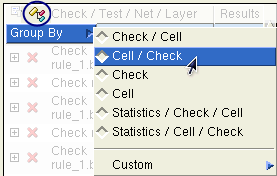

Opening the Calibre PERC LDL Database in Calibre RVE and Setting Options
Prerequisites
A successful Calibre PERC LDL run. See “Current Density Checks” and “Point-to-Point Resistance Checks” in the Calibre PERC User’s Manual.
The PINLOC keyword must be included in the DFM Database statement for pin highlighting to work.
A Calibre RVE license.
A layout viewer with an interface to Calibre RVE. See “Integration to Design Tools”.
Procedure
- (Optional) Click the Group By button (
 ) to
select the grouping for the Tree View.
) to
select the grouping for the Tree View.Use the Custom grouping option to group by properties. When specifying a Custom grouping, click the top entry of a menu selection to end the grouping hierarchy; see “Grouping Results in Calibre RVE for PERC” for complete instructions.

- Click the Options button (
 ) to open the Options pane and
set the following options:
) to open the Options pane and
set the following options:To add property data to the result highlights:
Choose the Highlighting category.
Expand the “DRC/DFM Highlighting” area.
Enable “Show Properties.”
To automatically show connectivity objects in the Internal Schematic Viewer:
Choose the Schematic Viewer category.
Enable “Show netlist schematics when highlighting connectivity objects,” “Show Schematic Pane,” “Show Hierarchy Pane,” and “Show Text Pane.”